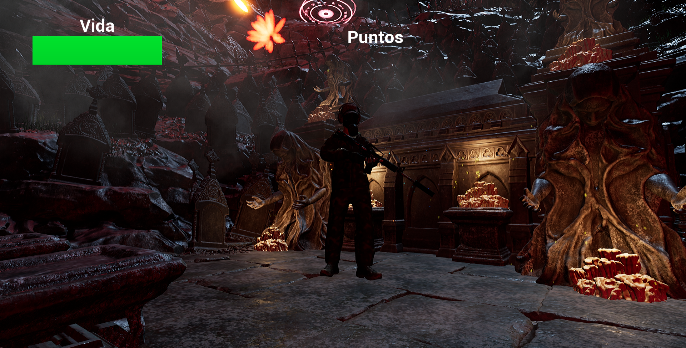
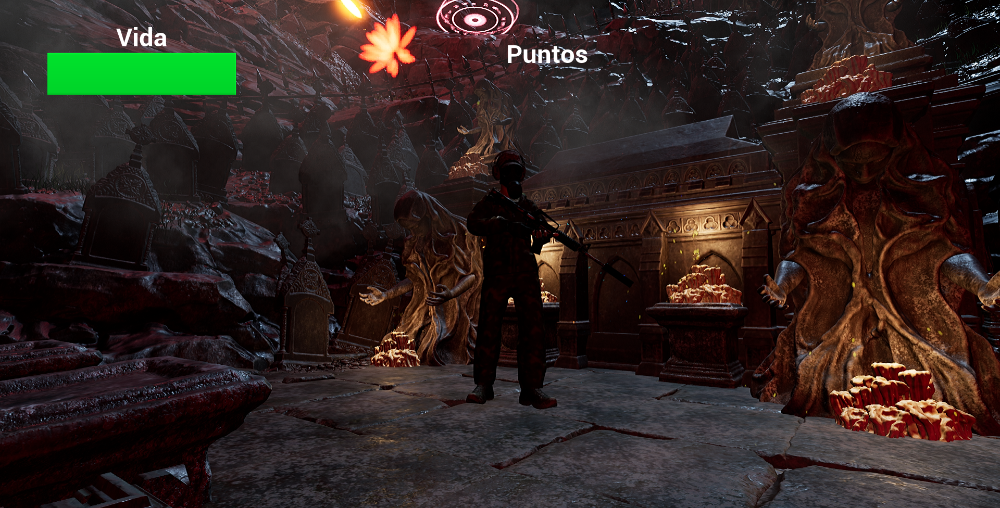
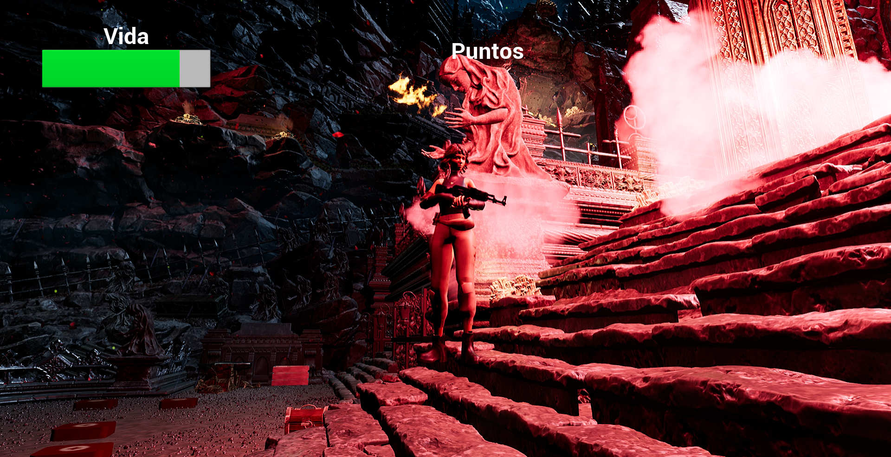
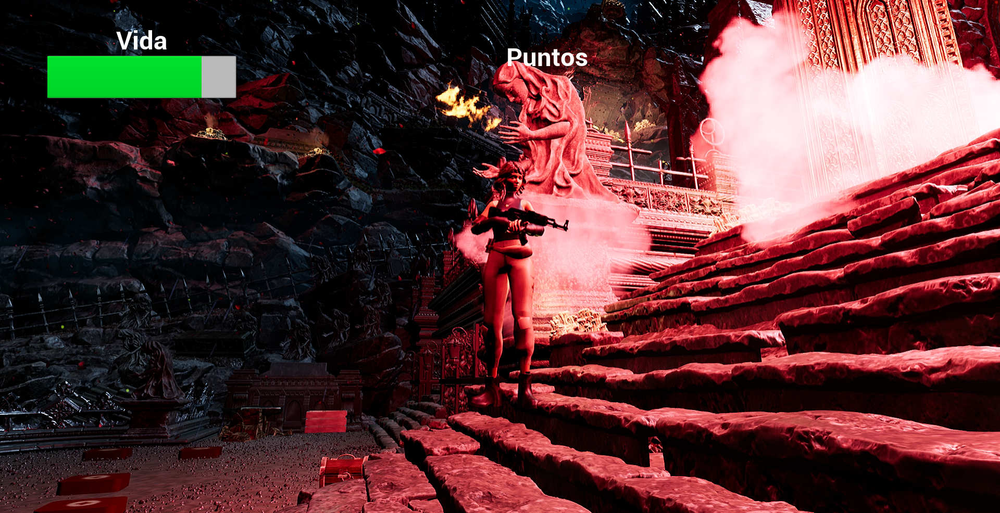

Lanzamiento de la Versión Beta
Fecha: 21 de mayo de 2024
Estamos emocionados de anunciar que la versión beta de "The Deepest Grave" estará disponible el próximo mes...
Explora las profundidades y descubre sus oscuros secretos
Ambiente inmersivo y terrorífico
Gráficos de alta calidad
Historia envolvente
Modo multijugador
 

 

En "The Deepest Grave", te embarcarás en una misión para descubrir los secretos ocultos en las profundidades de un mundo oscuro y peligroso...
En un mundo donde la frontera entre la vida y la muerte ha sido borrada, un oscuro experimento salió horriblemente mal. En un remoto cementerio olvidado por el tiempo, un grupo de científicos trabajando para una corporación secreta conocida como Necrotech intentó desarrollar un suero capaz de reanimar tejidos muertos. Su objetivo era noble: vencer a la muerte y otorgar a la humanidad una nueva oportunidad contra las enfermedades terminales. Sin embargo, algo salió terriblemente mal.
El suero funcionó, pero no como esperaban. Los cadáveres no solo volvieron a la vida, sino que lo hicieron con un insaciable deseo de carne humana. Las criaturas que una vez fueron humanas se convirtieron en zombis feroces, y el cementerio se transformó en un campo de batalla macabro. El experimento salió de control, y el virus comenzó a propagarse más allá de los límites del cementerio, amenazando con desatar una plaga zombi global.
En medio de este caos, un grupo de cuatro supervivientes se ve atrapado en el epicentro de esta pesadilla. Cada uno con sus propias habilidades y motivaciones, deberán unir fuerzas para enfrentarse a las hordas de no-muertos y desentrañar los secretos que se esconden en las tumbas y mausoleos del cementerio. Sus nombres son Jaiden, un ex-soldado con un oscuro pasado; Olivia, una científica que trabajaba en el proyecto y busca redención; Joe, ex compañero de Jaiden de la milicia; y Ada, una sobreviviente con un agudo instinto de supervivencia.
Con recursos limitados y enfrentándose a una amenaza implacable, los cuatro héroes deben encontrar la forma de detener la plaga antes de que se propague más allá de control. Su única esperanza reside en encontrar los restos del suero original y destruirlo, así como descubrir quién está detrás de Necrotech y detener sus siniestros planes. En su camino, se enfrentarán no solo a zombis comunes, sino también a mutantes aberrantes creados por el suero, cada uno más mortífero que el anterior.
Mientras se adentran en las profundidades del cementerio, cada paso que dan está lleno de peligros y revelaciones. Los supervivientes deberán usar su ingenio y trabajar en equipo para superar los obstáculos, encontrar mejores armas y suministros, y mantenerse con vida. A medida que avanzan, descubrirán que el verdadero horror no solo reside en los zombis que los acechan, sino también en los oscuros secretos que cada uno de ellos guarda y las decisiones morales que deberán tomar para sobrevivir.
En "The Deepest Grave", la línea entre héroe y villano se desdibuja, y la verdadera lucha no solo es por la supervivencia, sino también por mantener la humanidad en un mundo que se ha vuelto completamente inhumano. ¿Podrán Jaiden, Olivia, Joe y Ada sobrevivir a la noche y poner fin a la amenaza zombi, o serán ellos también consumidos por la oscuridad? Solo tú puedes decidir su destino.
"Una experiencia inolvidable, llena de misterio y emoción."
"Los gráficos y la historia son simplemente increíbles."⭐⭐⭐⭐⭐
Programador
Programador
Arte Digital
Arte Digital
Artista Principal
Artista Principal
Estamos emocionados de anunciar que la versión beta de "The Deepest Grave" estará disponible el próximo mes...
¡Hola a todos! Nos complace anunciar que hemos completado la fase alfa de nuestro juego y estamos entrando en la fase beta. Agradecemos a todos los que participaron en nuestras pruebas alfa y proporcionaron valiosos comentarios. En la fase beta, nos enfocaremos en mejorar la jugabilidad y corregir errores. ¡Estén atentos para más detalles sobre cómo participar en la beta cerrada!
¡Estamos emocionados de compartir con ustedes el nuevo tráiler de nuestro videojuego! Este tráiler ofrece un vistazo más profundo a la historia, los personajes y el mundo en el que estarán jugando. Puedes verlo en nuestra página de YouTube aquí. ¡No olvides dejar tus comentarios y decirnos qué te parece!
Hemos añadido una nueva galería de arte conceptual en nuestra sección de medios. Esta galería incluye ilustraciones de los entornos, personajes y criaturas que encontrarás en el juego. Echa un vistazo y déjanos saber cuál es tu favorito. ¡Nos encantaría saber tu opinión!
Queremos que nuestros jugadores sean parte del proceso creativo. ¡Ayúdanos a elegir el nombre de uno de los personajes principales de nuestro juego! Participa en nuestra encuesta y vota por tu nombre favorito. La encuesta estará abierta hasta el 30 de abril. ¡Esperamos tu participación!
En nuestro último informe de progreso, exploramos algunas de las mecánicas de juego y sistemas que hemos estado desarrollando. Desde el sistema de combate hasta la economía dentro del juego, queremos que tengas una idea de cómo estamos construyendo esta experiencia para ti.